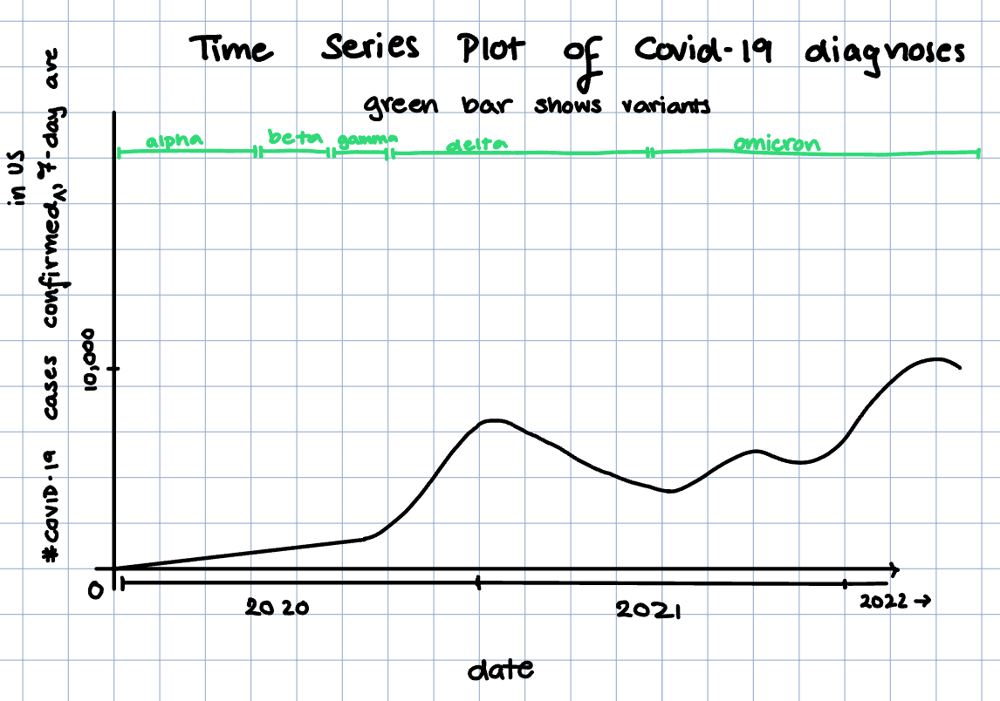

Reading & Critique

Insights about the data/visualization:
- COVID-19 cases follow a seasonal pattern, with surges occurring towards the winter (Dec/Jan) and lower case counts towards the spring and summer.
- Each year's winter COVID-19 peak seems to be higher than the last year's. The surge at the beginning of 2020 was much lower than the surge at the beginning of 2021, which was much lower in magnitude than the surge at the beginning of 2022.
- The Omicron variant's wave is much higher than previous waves, as we see the magnitude of the spiral's size is much higher at the beginning of 2022 than 2021, indicating that the 7-day average of daily new cases during Omicron was much higher than previous variants.
- After a peak, we see a very slow/long, flat decline in the average number of cases. Surges seem to happen much faster, and this difference suggests that while transmission can escalate rapidly, it subsides more slowly.
- The spiral visually connects the pandemic timeline from 2020 through 2022, reinforcing thats waves are part of a continuous process rather than isolated outbreaks.
Design Critique:
The spiral shape makes the seasonal nature of COVID-19 easy to see, since the same months repeat each year in the same positions. Using a 7-day average helps smooth out daily reporting noise, allowing viewers to focus on overall trends rather than sharp day-to-day spikes. The dramatic expansion in early 2022 makes it immediately obvious that the Omicron wave was much larger than previous surges. As a result, the chart is effective at communicating a sense of scale and urgency to a general audience.
At the same time, the design makes some important information harder to interpret. Because the chart uses a spiral rather than a standard time axis, it is difficult to compare exact case levels across different years or even across different months. The distance from the center represents case counts, but there are very few reference points, so readers must estimate values rather than read them directly. It is also not immediately clear where to begin reading the chart or how to trace time forward without carefully following labels. While the spiral emphasizes overall patterns and seasonality, it hides precise comparisons, such as how much larger Omicron was compared to earlier winter peaks. As a result, the visualization is strong for storytelling but less effective for readers who want to make clear, numerical comparisons or draw specific conclusions from the data.
Visualization Sketches

Design Rationale for Sketch 1:
- RATIONALE 1
- RATIONALE 2
- RATIONALE 3
Design Rationale for Sketch 2:
- RATIONALE 1
- RATIONALE 2
- RATIONALE 3
Design Rationale for Sketch 3:
- RATIONALE 1
- RATIONALE 2
- RATIONALE 3
Final Visualization Design
Final Writeup
DESCRIBE YOUR RATIONALE TO JUSTIFY THE DECISIONS FOR YOUR FINAL DESIGN. WHAT ARE YOU TRYING TO CONVEY, AND HOW DOES YOUR DESIGN FACILITATE THIS?
REFLECT ON HOW YOUR FINAL DESIGN DOES OR DOES NOT ADDRESS YOUR ORIGINAL CRITIQUE. WHAT TENSIONS OR TRADEOFFS DID YOU ENCOUNTER? WHAT DID NOT WORK OUT AS ANTICIPATED?